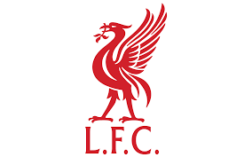
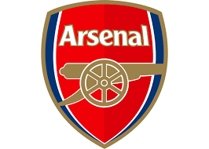
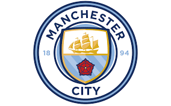

Mejores Equipos
Manchester United
Es uno de los clubes más exitosos de Inglaterra. Han ganado la liga inglesa muchísimas veces (más que ningún otro equipo), la FA Cup (la copa nacional) varias veces, y también la Champions League (el torneo de clubes más importante de Europa) en algunas ocasiones.

Liverpool
Otro club con una gran historia y muchos seguidores. También han ganado la liga inglesa muchas veces, la FA Cup, y son uno de los equipos ingleses con más títulos de la Champions League.
Arsenal
Un equipo de Londres con una larga tradición. Han sido campeones de la liga inglesa varias veces y también han ganado la FA Cup en muchas ocasiones. Son conocidos por su estilo de juego a veces muy bonito.
Chelsea
En los últimos años, se han convertido en un equipo muy fuerte. Han ganado la Premier League varias veces, la FA Cup, la Copa de la Liga, y también la Champions League y la Europa League (otra competición europea importante).

Manchester City
En los últimos años, han tenido mucho éxito, ganando la Premier League varias veces, la FA Cup y la Copa de la Liga. También ganaron la Champions League por primera vez en su historia recientemente.
